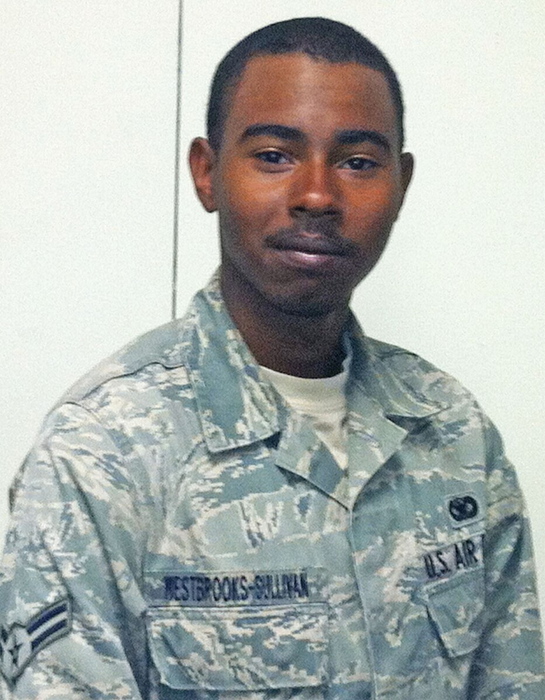

I served in the United States Air Force. During my time in the United States Air Force,I was a Security Forces (military police) member. I spent most of my time doing nuclear security. I became a certified Senior Entry Controller of a multi-billion dollar facility at the rank of E-3. This duty is normally carried out by the rank of E-4 and E-5. I also received training in law enforcement and responded to alerts and incidents. At the time of my Honorable discharge my rank was E-4 Senior Airman.
I spent most of my active duty life and my civilian life learning. I find nothing more thrilling engaging with people for the sake of furthering our education. Once I was seperated from the military I could not escape my desire to learn. I made sure to sure as much of the Gi Bill as I could. A few of the schools I went to:
Although I have had a lot of training and received many certificates I have no formal degree. I like to consider myself a Professional Student. I have always enjoyed the school setting and being in an environment of learning. Learning is a Top priority in my life, but gaming will always be my first true love.♥